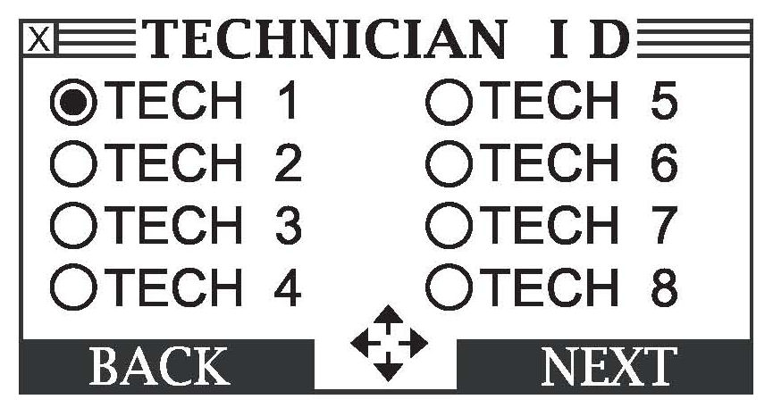

Electrical - Battery Testing And Replacement Information
88-016January 15, 2010
Applies To:
ALL
Battery Testing and Replacement
(Supersedes 88-016, dated September 12, 2009, to revise the information marked by asterisks)
REVISION SUMMARY
*^ Under WARRANTY CLAIM INFORMATION, battery claim Error Codes were added to some Warranty Requirements.
^ The 2005 Model Year and Later battery coverage section was changed to 2005-10 Model Year Vehicles.*
BACKGROUND
Maintaining batteries in vehicles is an important part of ensuring a battery's operating life. American Honda recommends using the ED-18 and GR8 to check and maintain batteries. Refer to this bulletin for:
^ Information on when to use the ED-18 and the GR8.
^ Instructions on how to use the ED-18 and the GR8.
^ How to properly submit a battery warranty claim.
REQUIRED TOOLS
^ GR8 Battery Diagnostic Station:
P/N MTRGR81100P
^ ED-18 Battery Analyzer (Version 1 or 2):
ED-18 Version 1: P/N INBED18LLH
ED-18 Version 2: P/N INB17191840
NOTE:
The ED-18 Battery Analyzer Version 1 is no longer available for purchase.
Tool Requirements
The GR8 and ED-18 software must be updated within 3 days of a new software update release. Refer to the applicable service bulletins for more information:
^ 09-034, GH8 Battery Diagnostic Station Update In formation
^ 09-027, ED- 18 Battery Analyzer Update In formation
Warranty Requirements
The 10-digit test code must be included on a battery replacement claim. Refer to WARRANTY CLAIM INFORMATION.
ORDERING INFORMATION
To order the GR8 Battery Diagnostic Station or the ED-18-2 Battery Analyzer, go to the Acura Tool and Equipment catalog on the iN (select Service > Service Bay > Tool and Equipment Program > Online Catalog), or call.
ED-18 AND GR8 USES
New Arrivals, TQI, and Storage
NOTE:
For more information about documenting the scheduled battery checks, refer to Service Bulletin 89-006, Battery Maintenance at Dealers.
ED-18 Battery Analyzer:
Check the condition of the battery and its state-of-charge:
- When the vehicle arrives at your dealership
- During the TQI
- During scheduled battery maintenance while the vehicle is in storage
- Before final delivery to the client
NOTE:
Keep a printout of every battery test. Your warranty claim may be rejected unless you show that the battery was properly maintained.
GR8 Battery Diagnostic Station:
^ Properly charge and diagnose the battery when indicated by the ED-i8
^ Smart, fast, and safe battery charging
^ Power supply mode maintains proper voltage during extended vehicle service, such as updating the PCM
^ Jump start mode supplies up to 250 amps
Client Scheduled Maintenance
ED-18 Battery Analyzer:
^ Check the condition of the battery and its state-of-charge when a vehicle comes in for scheduled maintenance.
GR8 Battery Diagnostic Station:
^ Properly charge and diagnose the battery when indicated by the ED-i8
^ Smart, fast, and safe battery charging
^ Power supply mode maintains proper voltage during extended vehicle service, such as updating the PCM
ED-18 Battery Analyzer and GR8 Battery Diagnostic Station:
^ When the ED-18 or GR8 displays Replace Battery or Bad Cell Replace, it provides a 10-digit code that must be included with the warranty claim. See WARRANTY COVERAGE for more information.
Used Vehicle Sale
ED-18 Battery Analyzer:
^ Check the condition of the battery and its state-of- charge:
- During vehicle inspection
- During scheduled battery maintenance when the vehicle is in storage
- Before final delivery to the client
GR8 Battery Diagnostic Station:
^ Properly charge and diagnose the battery when indicated by the ED-18
^ Smart, fast, and safe battery charging
^ Power supply mode maintains proper voltage during extended vehicle service, such as updating the PCM
^ Jump start mode supplies up to 250 amps.
USING THE ED-18 BATTERY ANALYZER
NOTE:
^ For set up, customizing, and other available features, refer to the ED-18 user's manual.
^ Make sure the setup has been completed, and the ED-18 updated to the most current software. The date and software version is very important for the proper result. Your warranty claim may not be paid if this information is wrong. See Tool Requirements under REQUIRED TOOLS for more information.
^ ED-18 version 2 is shown. Version 1 is similar.
1. Connect the leads to the battery's positive and negative terminals.
2. Use the arrow keys to select ENGLISH, then press Enter.

3. Use the arrow keys to select BATTERY, then press Enter.
4. Select your TECHNICIAN ID, then press Enter. After the summary of your technician ID appears, press Enter again.
5. Use the arrow or number keys to select the location of the battery, either OUT OF VEHICLE or IN VEHICLE, then press Enter.
6. Use the arrow or number keys to select FLOODED, then press Enter.
NOTE:
All Acura original equipment and replacement batteries are flooded types. If you select another battery type, your claim will not be covered by Acura's warranty.
7. Use the arrow or number keys to select the battery CCA value, then press Enter. You can find the CCA on the battery label on the top of the battery. If the battery hold-down plate is covering the label, loosen the plate and shift it out of the way to read the CCA.
NOTE:
Enter the correct cold cranking amps. If you enter the wrong number, the ED-18 analyzer result may be wrong, and the warranty claim may be rejected.
8. Measure the battery temperature by placing the analyzer's IR temperature sensor within 1 to 2 inches of the top or side of the battery. (The arrow on the top of the analyzer's housing indicates the sensor's location.) When the measured temperature on the display stabilizes, press Enter.
9. The analyzer displays the battery's current condition under RESULTS. The screen below shows one of four possible battery conditions, the battery's measured voltage, and the CCA. The screen includes a curved, two-section bar graph that represents the battery's condition.
10. Here are the four possible battery conditions:
^ Good Battery - This battery has at least 70% of its charge, 85% of its capacity, and requires no action.
^ GR8 Diagnostic Needed - The battery voltage is below 60% of its state of charge (SOC), and the condition of the battery is unknown. Use the GR8 to charge the battery and properly diagnose it.
^ Replace Battery - The battery condition is poor. Replace it.
^ Bad Cell Replace - There is an internal problem with the battery. Replace it.
11. The screens toggle back and forth until you turn off the analyzer. To print the test results, press BACK. To return to the main menu, press CLEAR.
NOTE:
^ If you need to submit a warranty claim, enter the 10-digit test code into the first two Diagnostic Trouble Code fields on the warranty claim.
^ If you enter the wrong CCA, or do not use the most current software version, your claim may be rejected.
^ The test results must state Replace Battery or Bad Cell Replace for a warranty battery replacement claim to be approved.
USING THE GR8 DIAGNOSTIC MODE
NOTE:
^ Use the GR8 diagnostic mode when the ED-18 indicates GR8 DIAGNOSTIC NEEDED.
^ For set up, customizing, and other available features, refer to the GR8 instruction manual; besides the one that comes with the GR8, the GR8 instruction manual is also available online. Select GENERAL PUBLICATIONS, select Tool Information, then select GR8-1100P Battery Diagnostic Station Instruction Manual from the list.
^ Make sure the setup has been completed, and that the GR8 is updated to the most current software. The date and software version is very important for the proper result. Your warranty claim may not be paid if this information is wrong. See Tool Requirements under REQUIRED TOOLS for more information.
1. Plug in the GR8.
2. Connect the leads to the battery's positive and negative terminals.
3. Use the arrow keys to select ENGLISH, then press Enter.
4. Use the arrow keys to select DIAGNOSTIC, then press Enter.

5. Select your TECHNICIAN ID, then press Enter. After the summary of your technician ID appears, press Enter again.
6. Use the arrow keys to select either DEALER INVENTORY or CUSTOMER VEHICLE, then press Enter.
7. Use the arrow or number keys to select the location of the battery, either OUT OF VEHICLE or IN VEHICLE, then press Enter.
8. Use the arrow or number keys to select FLOODED, then press Enter.
NOTE:
All Acura original equipment and replacement batteries are flooded types. If you select another battery type, your claim will not be covered by Acura's warranty.

9. Use the arrow or number keys to select the battery CCA value, then press Enter. You can find the CCA on the battery label on the top of the battery. If the battery hold-down plate is covering the label, loosen the plate and shift it out of the way to read the CCA.
NOTE:
Enter the correct cold cranking amps. If you enter the wrong number, the GR8 result may be wrong, and the warranty claim may be rejected.
10. The screen changes to a progress bar while the GR8 tests the battery.
11. If the battery voltage is below 60% of its state of charge (SOC), or the condition of the battery is unknown, the GR8 automatically starts charging the battery and diagnosing it.
NOTE:
^ The GR8 often states that charging and testing time is about 3 hours. Most actual charging and diagnostic times range between 15-25 minutes.
^ Battery charging times are affected by how the battery is discharged. If the battery discharged quickly (for example, the headlights were left on), the battery will recharge quickly. However, if the battery discharged slowly (for example, the battery was not checked for a very long time), it will take a lot longer to recharge it.
12. After the GR8 completes its diagnosis, it displays the battery's current condition. The screen shows one of three possible battery conditions, the battery's measured voltage, and the CCA. The screen includes a curved, two-section bar graph that represents the battery's condition.
13. Here are the three possible battery conditions:
^ Good Battery - This battery has at least 70% of its charge and requires no action.
^ Replace Battery - The battery condition is poor. Replace it.

^ Bad Cell Replace - There is a problem with the battery. Replace it.
14. The screens toggle back and forth until you turn off the tester. To print the test results, press BACK. To return to the main menu, press CLEAR.
NOTE:
^ If you need to submit a warranty claim, enter the 10-digit test code into the first two Diagnostic Trouble Code fields on the warranty claim.
^ If you enter the wrong CCA, or do not use the most current software version, your claim may be rejected.
^ The test results must state Replace Battery or Bad Cell Replace for a warranty battery replacement claim to be approved.
USING THE GR8 DIAGNOSTIC STATION - ED-18 BATTERY TEST FUNCTION
NOTE:
^ The ED-18 battery test function in the GR8 should be used only when your ED-18 is out of service.
^ For set up, customizing, and other available features, refer to the GR8 instruction manual besides the one that comes with the GR8, the GR8 instruction manual is also available online. Select GENERAL PUBLICATIONS, select Tool Information, then select GR8-1100P Battery Diagnostic Station Instruction Manual from the list.
^ Make sure the setup has been completed, and the GR8 updated to the most current software. The date and software version is very important for the proper result. Your warranty claim may not be paid if this information is wrong. See Tool Requirements under REQUIRED TOOLS for more information.
1. Plug in the GR8.
2. Connect the leads to the battery's positive and negative terminals.
3. Use the arrow keys to select ENGLISH, then press Enter.
4. Use the arrow keys to select OPTIONS, then press Enter.
5. Use the arrow keys to select ED-18 Test, then press Enter.
6. Select your TECHNICIAN ID, then press Enter. After the summary of your technician ID appears, press Enter again.
7. Use the arrow keys to select either DEALER INVENTORY or CUSTOMER VEHICLE, then press Enter.
8. Use the arrow or number keys to select the location of the battery, either OUT OF VEHICLE or IN VEHICLE, then press Enter.
9. Use the arrow or number keys to select the FLOODED, then press Enter.
NOTE:
All Acura original equipment and replacement batteries are flooded types. If you select another battery type, your claim will not be covered by Acura's warranty.
10. Use the arrow or number keys to select the battery CCA value, then press Enter. You can find the CCA on the battery label on the top of the battery. If the battery hold-down plate is covering the label, loosen the plate and shift it out of the way to read the CCA.
NOTE:
Enter the correct cold cranking amps. If you enter the wrong number, the battery test result may be wrong, and the warranty claim may be rejected.
11. The screen changes to a progress bar while the GR8 tests the battery.
12. If the battery voltage is below 60% of its state of charge (SOC), or the condition of the battery is unknown, the GR8 automatically changes to its diagnostic feature. A screen stating CHARGING RECOMMENDED. DO YOU WANT TO CONTINUE?" appears. Select Yes. After the battery is charged and diagnosed, go to step 13.
NOTE:
^ The GR8 often states that charging and testing time is about 3 hours. Most actual charging and diagnostic times range between 15-25 minutes.
^ Battery charging times are affected by how the battery is discharged. If the battery discharged quickly (for example, the headlights were left on), the battery will recharge quickly. However, if the battery discharged slowly (for example, the battery was not checked for a very long time), it will take a lot longer to recharge it.
13. The tester displays the battery's current condition. The screen shows one of three possible battery conditions, the battery's measured voltage, and the CCA. The screen includes a curved, two-section bar graph that represents the battery's condition.
14. Here are the three possible battery conditions:
^ Good Battery - This battery has at least 70 percent of its charge and requires no action.
^ Replace Battery - The battery condition is poor. Replace it.
^ Bad Cell Replace - There is a problem with the battery. Replace it.
15. The screens toggle back and forth until you turn off the tester. To print the test results, press BACK. To return to the main menu, press CLEAR.
NOTE:
^ If you need to submit a warranty claim, enter the 10-digit test code into the first two Diagnostic Trouble Code fields on the warranty claim.
^ If you enter the wrong CCA, or do not use the most current software version, your claim may be rejected.
^ The test results must state Replace Battery or Bad Cell Replace for a warranty battery replacement claim to be approved.
WARRANTY CLAIM INFORMATION
Battery Replacement - Original Equipment Battery Limited Warranty (Factory-Installed Battery or AHM Parts Battery)
Operation Number: 710100
Flat Rate Time: 0.3 hour
Symptom Code: 07002
DTC: Enter the 10-digit test code into
the first two Diagnostic Trouble
Code fields in the warranty claim.
Warranty Requirements
^ Only batteries that are Original Equipment (factory-installed) or supplied by AHM Parts are covered by the Original Equipment Battery Limited Warranty.
^ No battery warranty claim will be accepted without the 10-digit test code from the ED-18 Battery Analyzer or the GR8 Battery Diagnostic Station.
^ Enter the 10-digit test code into the Warranty Claim DTC fields one and two.
^ The battery tester print-out stating Replace Battery or Bad Cell Replace must be attached to the related repair order or the warranty claim will not be approved.
^ All batteries replaced under warranty must have a warranty claim tag attached to it.
^ If you have a battery under warranty that needs replacement for a non-electrical defect (like a cracked case) and the battery tester does not display Replace Battery or Bad Cell Replace, contact your District Parts and Service Manager (DPSM) for help.
*^ The battery claim will be returned to your dealership unpaid with an Error Code of 2081 if the tester printout does not state Replace Battery or Bad Cell Replace.
^ A battery claim will be returned to the dealership unpaid with an Error Code of 2082 if the technician entered the CCA (from the ED-18 Rating field or the GR8 Test Info field) that does not match the factory-installed battery or the AHM Parts replacement battery CCA. Make sure the CCA matches the model and model year on the iN (Interactive Network). Go to Service > Service Library > Claims Reference Guide > Coverage Tables > Battery Warranty.
^ The ED-18 and GR8 must have the most current software version. Acura policy states that you must update your tools within 3 days of being notified that an update is available. A battery claim will be returned to the dealership unpaid with an Error Code of 2083 if a repair order (RO) date is 7 days or later after the software activation date for the latest tester software. See REQUIRED TOOLS for more information about the current software version and how to update your tools. You can also check the software version active dates on the iN. Go to Service > Service Library > Claims Reference Guide > Coverage Tables> Battery Warranty.
^ All Acura 12-volt batteries are lead-acid (flooded type). No other battery types are accepted. If you try to submit a claim with a battery that was not tested as flooded, the claim will be returned to your dealership unpaid with an Error Code of 2084. See step 6 of USING THE ED-18 BATTERY TESTER or step 9 of USING THE GR8 DIAGNOSTIC STATION - ED-18 BATTERY TEST FUNCTION for how to test the battery.
^ ED-18 and GR8 battery test codes are used for product research and warranty validation. Some of the information gathered is:*
- Tool type
- Software version
- Test date
- Test results:
^ Battery voltage
^ CCA results
^ Battery condition
^ Battery temperature
- Tech-entered information:
^ Battery CCA
^ Battery type
Unsold New Vehicles
The dealer is responsible for testing and charging batteries when the vehicle first arrives at the dealership and while in dealer inventory. Testing and charging to maintain the battery in a new and unsold vehicle cannot be claimed under warranty. If you let a good battery sit discharged, and it is damaged from poor maintenance, this is not a defect, and the replacement is not covered by warranty.
If your dealership receives a new vehicle (less than 2 weeks since delivery) with a defective battery (your ED-18 or GR8 states Replace Battery or Bad Cell, plus the 10-digit code), you can file a warranty claim. You must show the printout from the ED18 or GR8 and the vehicle delivery document (bill of lading) to your DPSM and request their approval of claim error 3050, No Warranty - In Stock Battery.
You are required to test the battery during the PDI and at final delivery. Record the 10-digit test code created by the ED-18 or GR8 in the applicable places of the Service History booklet, and place a printout of the tester results in the vehicle file. See RECORD KEEPING in Service Bulletin 89-006, Battery Maintenance at Dealers, for more information.
Acceptable printouts must have this information:
^ A test date matching the PDI or final delivery date
^ The correct CCA value for the battery tested
^ A Good Battery test result
^ VIN (written by tech on printout)
Client-Owned Vehicles From 0 to 90 Days
Warranty claim error code 3055 was created for battery replacement claims within 90 days of delivery to the customer. It can be cleared only by a DPSM. For your DPSM to override warranty claim error code 3055, you need to provide this documentation:
^ The initial TQI battery test printout that matches the TQI date or the new arrival battery test printout and the vehicle delivery document (bill of lading), lists the correct CCA rating, and shows the battery condition as Good Battery.
^ The Final Inspection that matches the date of the vehicle delivery, lists the correct CCA rating, and shows the battery condition as Good Battery.
^ The latest battery test that shows Replace Battery or Bad Cell Replace. Use the 10-digit code from this test when submitting the warranty claim.
Client-Owned Vehicles From 91 Days to 4 Years
All battery warranty claims need an ED-18 or GR8 test code included under the DTC (Diagnostic Trouble Code) field. Any claims submitted without a code will be rejected, and test codes are audited for accuracy. Attach the ED-18 or GR8 tester printout that states
Replace Battery or Bad Cell - Replace. If your claim is rejected with the claim error codes 2080 or 2081, refer to these code explanations:
^ 2080 - Battery test code required. Enter the 10-digit code from the ED-18 or GR8 in the DTC field and resubmit.
^ 2081 - Good battery or invalid battery code. This code is created when you submit a 10-digit code that indicates a Good Battery, Charge & Retest, or an invalid code was entered.
Refer to the owner's manual or current Dealer Operations Manual for warranty coverage. Each defective battery replaced under warranty must have a warranty claim tag securely attached to it. If you need to replace a battery because of a non-electrical problem (for example, the case is cracked) but the ED-18 or GR8 reads that the battery is good, contact your DPSM for help.
Warranty Coverage
Enter the warranty claim information listed, and the full dealer net amount. The parts and labor reimbursement is calculated according to the following tables after you submit the warranty claim.
2005-10 Model Year Vehicles
Batteries in 2005-10 model year vehicles are covered in full for parts and labor with no mileage limit for 48 months.
2004 Model Year and Earlier
See section 2.18 of the Dealer Operations Manual for more information.
Parts Warranty - Replacement Battery Limited Warranty (Client paid at an Acura dealership for an AHM Parts battery)
Operation Number: 000005
Flat Rate Time: 0.3 hour
Defect Code: 862
Symptom Code: 07002
DTC: Enter the 10-digit test code into the first two
Diagnostic Trouble Code fields in the warranty claim.
Refer to the Warranty Requirements under Battery
Replacement - Original Equipment Battery Limited Warranty.
Warranty Coverage
Enter and submit a parts warranty claim with the information listed and the full dealer net amount. The parts and labor reimbursement is calculated according to the schedule below after the warranty claim is submitted.
Replacement Batteries Sold On or After November 1, 2004
Batteries are covered for 100 months, with full coverage for the first 36 months in service and prorated between the 37th and 100th month of service as listed in the table.
Replacement Batteries Sold Between February 1, 2000, and October 31, 2004
See Section 2.18 of the Dealer Operations Manual for more information.

Disclaimer